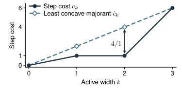

返回一张票，何时停止、何时补发？
共有 N 条路径，S 是已返回路径的编号集合。第一名领先第二名的票数一旦超过未返回的票数，就能确定胜者。弃权也算返回。如果还没有任何标签得票，票差为零。
否则，从前往后扫描各个前缀。前 t 个位置里，若所有尚未知晓的票都投给当前领先者之一，前缀票差就达到最大值 gt。
M 是根据已返回选票及其位置推算的最早可能串行停止位置。F 限制累计启动数，后来取消的也要计入。三项限制分别来自启动配额 Q、槽数 P，以及相对串行停止位置 K 允许多开的 B 条。
五条路径、两张已返回的票
取 N = Q = 5、P = 3、B = 1。第 1、4 条还在运行，第 2、3 条投给了不同标签。一共已启动四条，空出一个槽。
第 5 条可以启动。只读连续前缀的调度器还看不到任何票，无法排除前三票全都一致的可能，因此上限仍是 3 + 1 = 4。
§2.2，第 2–3 页
 ⤢
图 2 每张返回的选票都可能改变哪些路径可以启动。
⤢
图 2 每张返回的选票都可能改变哪些路径可以启动。
零额外启动时，总工作量固定
所有合法调度都完成前 min(K, Q) 条路径。在任一竞争策略 A 的虚拟解码时间轴上任选一组时段 E，这些时段可以互不相连。立即补发 G 在开头同样长的虚拟时间里，完成的工作至少一样多。高度 h 表示活跃路径数。
占用主序怎样导出定理？
零额外预算下，每完成一条至多多放行一条，允许的并发宽度只会持平或减小。附录 B 压缩所选时段之间的空隙，保留每次启动时所依据的观察，由此为依赖选票的准入策略证明式 (3)。经典主序理论随后给出凹成本下的时间排序。附录 J 的反例说明，单凭各任务更早完成还推不出这个排序。
取并发宽度超过 j 的时段。每单位虚拟时间扣除 j 单位工作量，就得到超出阈值的占用量 U。所有调度的总工作量 W* 相同。
离散凹性使每个曲率系数都非负。立即补发使上式的每一个减项最大，因此耗时最小。
定理 1，第 4 页 · 附录 J，第 22 页

⤢
图 3 在这个数学算例中，宽度二处的上凹包高度是原成本的四倍。
有额外预算时，哪些路径的工作不可省？
设 S 是返回结果时可能已经完成的路径集合。要等长度为 wj 的路径 j 完成，更早启动的每条路径此时都已跑完，或至少已运行 wj 个单位。把各条路径必需的工作量相加得到 W(S)。空集上的最大值取零。
对每个可能的 S，求各宽度完成这些工作所需的最低成本。取所有集合下界中的最小值 L，就能限制相对立即补发最多能省多少。即使调度器预知长度与选票，只要遵守同一准入规则，也受这个界约束。
一个终止集合对应的线性规划
dk 表示在宽度 k 上花费的虚拟时间。Wm 是最大的 m 项工作量之和，不足时补零。VG 是立即补发的虚拟耗时。确定胜者后继续补发直到达到配额，可以得到各路径的最早完成时刻 ei。
各求和式遍历宽度 1 ≤ k ≤ P。含 m 的约束对每个整数 1 ≤ m < P 都成立。
所考察的集合必须覆盖所有实际可能的终止集合。线性规划允许的某些宽度时长未必能排成实际调度，因此节时上界可能达不到。
定理 2，第 7 页